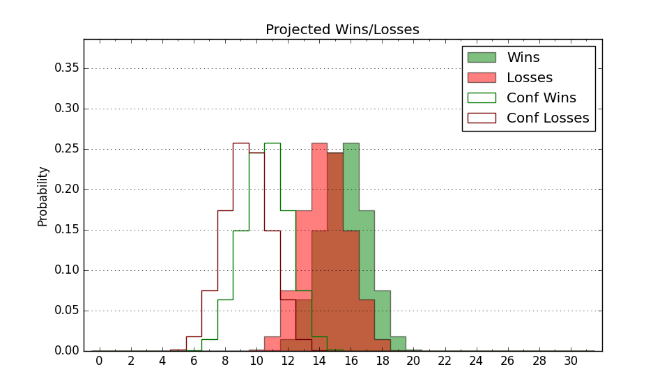

| Home | Game Probabilities | Conferences | Preseason Predictions | Odds Charts | NCAA Tournament |
| City: | Northridge, California | |
| Conference: | Big West (4th)
| |
| Record: | 6-5 (Conf) 11-10 (Overall) | |
| Ratings: | Comp.: -2.8 (194th) Net: -2.7 (196th) Off: 107.2 (191st) Def: 109.9 (196th) SoR: 0.0 (111th) |
| Remaining | ||||||
|---|---|---|---|---|---|---|
| Date | Opponent | Win Prob | Pred. | |||
| 2/5 | @ Cal Poly (235) | 46.1% | L 89-90 | |||
| 2/7 | UC Riverside (280) | 80.8% | W 86-75 | |||
| 2/14 | Hawaii (93) | 35.6% | L 76-81 | |||
| 2/19 | @ UC Santa Barbara (134) | 23.1% | L 76-84 | |||
| 2/21 | @ Long Beach St. (236) | 46.5% | L 80-82 | |||
| 2/26 | UC Irvine (112) | 42.2% | L 75-77 | |||
| 2/28 | @ UC Riverside (280) | 55.3% | W 81-80 | |||
| 3/5 | @ Cal St. Bakersfield (309) | 66.6% | W 86-81 | |||
| 3/7 | Cal St. Fullerton (185) | 62.7% | W 90-85 | |||
| Previous | Game Score | |||||
| Date | Opponent | Win Prob | Result | Off | Def | Net |
| 11/6 | @Northern Iowa (104) | 16.5% | L 57-86 | -14.0 | -8.8 | -22.8 |
| 11/9 | @North Dakota (263) | 51.2% | W 93-85 | 8.2 | -3.6 | 4.6 |
| 11/11 | @North Dakota St. (129) | 21.4% | L 68-90 | -19.6 | 9.1 | -10.5 |
| 11/16 | Troy (141) | 52.0% | W 94-85 | 17.6 | -8.3 | 9.3 |
| 11/26 | (N) Idaho (138) | 36.5% | L 64-78 | -18.7 | 3.5 | -15.2 |
| 11/28 | (N) Idaho St. (144) | 37.9% | L 50-82 | -44.2 | 2.9 | -41.3 |
| 12/4 | Cal St. Bakersfield (309) | 87.2% | W 87-66 | 1.1 | 9.0 | 10.1 |
| 12/6 | @UC Irvine (112) | 17.7% | L 71-85 | 7.4 | -18.2 | -10.7 |
| 12/10 | Fresno St. (140) | 51.7% | W 89-87 | 23.8 | -20.1 | 3.7 |
| 12/13 | @Delaware (295) | 59.6% | W 88-66 | 22.3 | 6.2 | 28.5 |
| 12/22 | Sacramento St. (246) | 76.1% | W 100-88 | 10.2 | -6.0 | 4.2 |
| 12/27 | @Stanford (80) | 12.1% | L 80-88 | 8.4 | 0.1 | 8.5 |
| 1/1 | @UC Davis (184) | 32.8% | L 80-89 | -0.8 | -6.0 | -6.9 |
| 1/3 | UC Santa Barbara (134) | 50.5% | W 74-65 | -7.4 | 24.4 | 17.0 |
| 1/8 | Cal Poly (235) | 74.4% | W 95-90 | 6.6 | -4.9 | 1.7 |
| 1/10 | @Cal St. Fullerton (185) | 33.1% | L 79-86 | -4.5 | -2.6 | -7.1 |
| 1/15 | @UC San Diego (126) | 20.9% | W 84-79 | 13.9 | 5.8 | 19.6 |
| 1/17 | Long Beach St. (236) | 74.7% | L 80-87 | -12.4 | -9.6 | -21.9 |
| 1/24 | @Hawaii (93) | 13.9% | L 68-89 | -4.5 | -3.9 | -8.5 |
| 1/29 | UC Davis (184) | 62.4% | W 94-78 | 4.2 | 5.3 | 9.5 |
| 1/31 | UC San Diego (126) | 47.4% | W 81-64 | 3.1 | 21.8 | 24.9 |
| Stats & Trends | |||||
|---|---|---|---|---|---|
| Current | Day | Week | Month | Season | |
| Composite | -2.8 | +1.1 | +1.6 | +1.8 | +0.1 |
| Comp Rank | 194 | +12 | +15 | +13 | -38 |
| Net Efficiency | -2.7 | +1.2 | +1.7 | +2.3 | -- |
| Net Rank | 196 | +12 | +17 | +25 | -- |
| Off Efficiency | 107.2 | +0.1 | +0.3 | -1.5 | -- |
| Off Rank | 191 | +1 | +1 | -33 | -- |
| Def Efficiency | 109.9 | +1.1 | +1.4 | +3.8 | -- |
| Def Rank | 196 | +29 | +32 | +90 | -- |
| SoS Rank | 151 | -1 | -10 | +13 | -- |
| Exp. Wins | 15.6 | +0.8 | +1.3 | +1.6 | -0.7 |
| Exp. Conf Wins | 10.6 | +0.8 | +1.3 | +1.6 | -0.5 |
| Conf Champ Prob | 0.5 | +0.3 | +0.4 | -0.4 | -10.1 |

| Advanced Stats | ||
|---|---|---|
| Stat | Value | Rank |
| Off Eff FG % | 0.510 | 179 |
| Off Ast Ratio | 0.164 | 83 |
| Off ORB% | 0.323 | 129 |
| Off TO Rate | 0.153 | 227 |
| Off FT Ratio | 0.367 | 158 |
| Def Eff FG % | 0.517 | 190 |
| Def Ast Ratio | 0.156 | 246 |
| Def ORB% | 0.269 | 66 |
| Def TO Rate | 0.139 | 238 |
| Def FT Ratio | 0.366 | 213 |